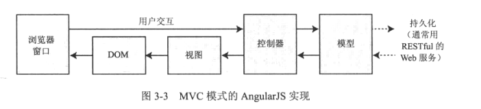

第三章、结合背景理解AngularJS
并不是所有的应用程序都适合使用AngularJS开发，本章主要介绍AngularJS的适用场景。
AngularJS不是能够解决任何问题的万能利器，所以了解何时应该使用AngularJS以及何时应该寻找替代品是非常重要的。AngularJS将那些曾经仅对服务器端开发者可用的功能完整地搬到了浏览器端。这意味着使用了AngularJS的HTML文档每次被加载时，AngularJS会有很多事要做——需要编译HTML元素，需要计算数据绑定，需要执行指令等。这些工作都需要时间去执行，所需时长取决于HTML文档及其相关联的JavaScript代码的复杂度，而且关键是浏览器的质量和设备的处理能力。
因此，Angular应用优化的目标应该是尽可能地降低这些设置的执行频率，并在其执行时尽可能多地向用户发送应用的更多内容。这意味着需要你仔细考虑所搭建的Web应用程序的类型。广义上讲，存在两种类型的Web应用程序：回合式和单页面。
回合式和单页面应用程序
回合式模型
浏览器向服务器请求一个初始的HTML文档。用户交互（例如单击链接或者提交表单）会使得浏览器发送请求并接受一个全新的HTML文档。在这类程序中，浏览器本质上是一个HTML内容的解析引擎，所有的应用程序逻辑和数据都保留在服务器上。
回合式应用存在一些严重的不足之处：用户在下一个HTML文档被请求并加载之前必须等待，需要大型服务器端基础设施来处理所有请求，需要很多带宽。
单页面应用
单页面应用另辟蹊径，一个初始的HTML文档被发送给服务器，但是用户交互所产生的Ajax请求只会请求较小的HTML片段，初始的HTML文档不会被再次加载或者替换，在Ajax请求被异步执行时用户还可以继续与已有的HTML进行交互。(AngularJS的路由加载模块就是明显的例子，页面的切换只是部分HTML代码的变换，页面还是原来的页面)
AngularJS以单页面应用程序和复杂的回合式应用程序见长。对于较简单的项目，一般来说jQuery或者类似的替代者会是更好的选择，尽管没什么能阻止你在所有的项目中使用AngularJS。
AngularJS与jQuery在Web应用开发上走的是不同的路，jQuery完全是通过显式操作浏览器中的DOM来创建应用。AngularJS采用的方法则是将浏览器吸收为应用开发的基础。
理解MVC模式
使用MVC模式的关键前提是实现关注点分离，即应用程序中的数据模型与业务和展示逻辑解耦。主要的三个构件是模型、控制器和视图。
AngularJS是在浏览器中工作的，导致对MVC的形式产生一些影响。

理解模型
模型（MVC中的M）包含了用户赖以工作的数据。有两种广义上的模型：视图模型，只表示从控制器传往视图的数据；领域模型：包含了业务领域的数据，以及用于创建、存储、和操纵这些数据的各种操作、转换和规则，统称逻辑模型。
模型应该：* 包含领域数据 * 包含创建、管理和修改领域数据的逻辑 * 提供整洁的API，能够暴露模型数据及之上的操作。模型不应该：
* 暴露模型数据是如何获取或管理的细节 * 包含根据用户交互对模型进行转换的逻辑（这是控制器的职责） * 包含将数据显示给用户的逻辑理解控制器
在一个AngularJS应用中，控制器就像结缔组织一样，作为数据模型和视图之间的渠道。控制器会向作用域中添加业务领域逻辑（称为行为），而作用域是模型的子集。
控制器应该：* 包含初始化作用域所需的逻辑 * 包含视图所需的用于表示作用域中的数据的逻辑行为。 * 包含根据用户交互来更新作用域的逻辑行为控制器不应当：
* 包含操作DOM的逻辑（那是视图的职责） * 包含管理数据持久化的逻辑（那是模型的职责） * 在作用域之外操作数据理解视图数据
领域模型并不是AngularJS应用程序中的唯一数据。控制器可以创建视图数据，以简化视图的定义。视图数据不会被持久化。而且要么是通过综合领域模型数据的几部分而成的，要么是存在于对用户交互的响应中。理解视图
AngularJS视图是通过HTML元素来定义的，而这些元素是通过数据或者指令来进行增强或者生成的。正是AngularJS指令使得视图变得如此灵活。
视图应当：* 包含将数据呈现给用户所需的逻辑和标记。视图不应当：
* 包含复杂逻辑（这最好放到控制器中去） * 包含创建、存储或者操作领域模型的逻辑
理解RESTful服务
一般情况下，我们并不希望客户端代码直接访问数据存储——这样会在客户端和数据存储之间产生紧耦合，使得单元测试复杂化，也使得在不修改客户端代码的情况下对数据存储的修改变得困难。
通过服务器端作为中介来访问数据存储，可以消除紧耦合。客户端的逻辑负责从服务器端存取数据，而无需知道数据在后台是如何存储或访问的细节。
有许多种在客户端和服务端之间传递数据的方法。最常见的一种是使用Ajax请求来调用服务器端代码，让服务器发送JSON并使用HTML表单来修改数据。这种方法可以很好地工作，也是RESTful Web服务的基础，利用了HTTP请求的天然特性对数据进行CRUD操作。
在一个RESTful服务中，被请求的操作通过HTTP方法和URL的组合进行表示。对于RESTful的Web服务没有标准的URL规范，但是一般想法是让URL是不言自明的，这样能够让URL引用的变得更加明显。例如：
在本例中，明显地看出有一个people的数据集合，引用的具体对象是bob。
URL可以识别出我想操作的数据对象，HTTP方法则指定了我想执行的操作。如下表所示：
| 方法 | 描述 |
|---|---|
| GET | 获取URL指定的数据对象 |
| PUT | 更新URL指定的数据对象 |
| POST | 创建一个新的对象，通常使用表单数据值作为数据域 |
| DELETE | 删除URL所指定的数据对象 |
Angular应用的几条规则
- 视图逻辑应该仅为显示准备数据，并且永远不应该修改模型
- 控制器永远不应该直接创建、更新或删除模型中的数据
- 客户端永远都不应该直接访问数据存储。
- 不要尝试在Angular应用使用jQuery操作DOM，技术的选型应该在最初的时候考虑清楚，否则后患无穷。如果实在需要使用jQuery，建议使用AngularJS封装的jqLite，后面会讲解。